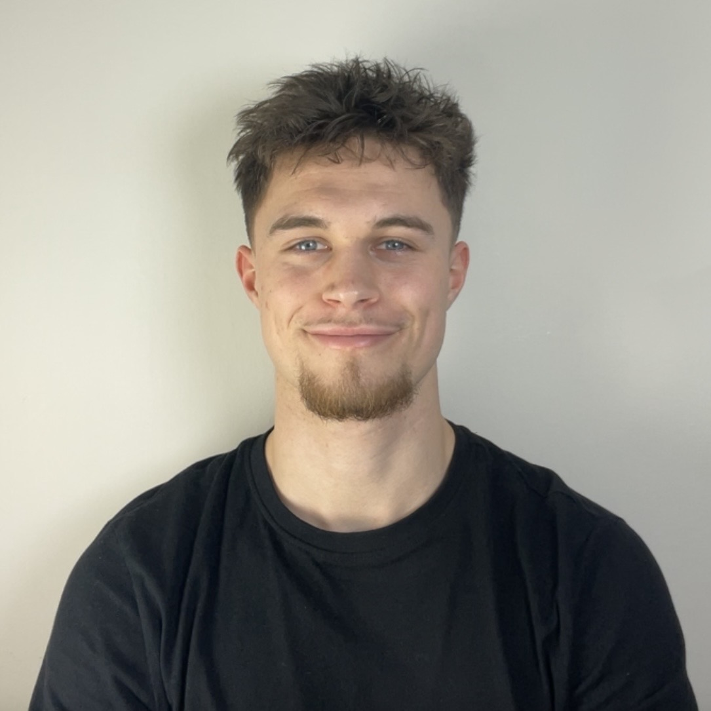

Mewen Chatellier
Alternant Qualité secteur Métrologie
« Dans la course à la qualité, il n'y a pas de ligne d'arrivée. » — David T. Kearns
C'est avec cet état d'esprit que j'évolue en tant qu'alternant en qualité. Je suis très intéressé par la métrologie et les contrôles dimensionnels, des opérations d'exigence que je réalise quotidiennement. Travaillant au cœur de l'industrie du sport automobile, j'ai l'habitude de conjuguer rigueur technique et quête de la performance mécanique.
Curieux de voir comment ces compétences se traduisent concrètement ? Venez découvrir mon portfolio juste en dessous !
Mon Profil
Mewen Chatellier
Étudiant en 2ème année de BUT QLIO (Qualité, Logistique Industrielle et Organisation) à l'IUT de Nantes, j'ai développé une solide expertise de terrain grâce à mon alternance dans l'industrie des sports mécaniques. Habitué à manier le pied à coulisse et les bras de mesure, j'aime allier la rigueur de la métrologie à la recherche constante de performance technique sur des pièces de compétition.
Très intéressé par l'ingénierie de précision et l'excellence mécanique, mon approche de la qualité est fortement inspirée par la philosophie industrielle japonaise et les principes d'amélioration continue du Lean manufacturing. Sur le terrain, cette rigueur se traduit particulièrement par la gestion minutieuse des pièces prototypes : j'analyse les échantillons initiaux et m'assure du strict respect du cahier des charges technique avant de valider leur conformité pour autoriser un lancement en série.
D'un naturel pragmatique, je tire une grande partie de mes valeurs de mes 10 années de pratique du football à un niveau régional. Cet engagement sur le long terme m'a forgé un fort attachement à la cohésion de groupe, à l'entraide et à l'exigence collective, des qualités qui se reflètent directement dans mon environnement professionnel. C'est cette même dynamique d'équipe qui me permet aujourd'hui de m'intégrer, de collaborer efficacement et d'avancer en parfaite synergie avec mes collègues de la qualité sur de nouveaux projets d'industrialisation.
Expériences Professionnelles
📅 Depuis Septembre 2025
Apprenti en Contrôle Qualité
🏢 Sodikart
Intégré au sein de l'atelier, je participe activement à la validation et à la conformité des pièces techniques :
- Réalisation d'inspections qualité sur les composants de karting (gammes compétition et location)
- Contrôles dimensionnels et métrologie de précision sur des pièces spécifiques
- Application des méthodologies d'amélioration continue (Lean Manufacturing, 5S, DMAIC)
Formation
📚 Depuis Septembre 2024
BUT QLIO
🎓 Université de Nantes - IUT Nantes
Organisation des activités de production, gestion des flux physiques et d'information, pilotage par la qualité, méthodologies d'amélioration continue.
🏆 2024
Baccalauréat Général
Spécialités : SVT, SES, Mathématiques
Formations Certifiantes
🎖 Certification
Lean 6 Sigma Yellow Belt
Maîtrise des outils d'amélioration continue
Apprentissage des principes du Lean Management, maîtrise du DMAIC, identification des gaspillages et utilisation d'outils de diagnostic (5S, QQOQCCP, etc.).
Réalisations
🔍 Contrôle Qualité
Mise en œuvre de contrôles physiques et dimensionnels rigoureux (dureté, flexion, cintrage) pour garantir la sécurité sur piste.
📋 Formalisation Industrielle
Cartographie et modélisation des processus via la rédaction d'instructions détaillées, procédures et logigrammes.
🤝 Assurance Qualité
Rédaction de cahiers des charges et pilotage de la conformité des échantillons initiaux et pièces prototypes.
⚙️ Optimisation des Flux
Utilisation de logiciels de simulation et d'ingénierie (CAO) pour analyser et optimiser les lignes de production.
Projet Clé
🚀 Industrialisation
Développement du kart SODIKART SR6
Responsable de la validation des composants pour le lancement en série :
- Contrôle des Échantillons Initiaux (EI) : Inspection métrologique rigoureuse de tous les composants
- Validation des prototypes : Vérification stricte de la conformité vis-à-vis du cahier des charges
- Acceptation en série : Validation finale autorisant le lancement de la production
Hard Skills
📝 Formalisation et documentation
Processus • Rédaction technique • Logigrammes
✅ Gestion de la qualité
Analyse de performance • Indicateurs de qualité • Amélioration continue
📏 Contrôle qualité opérationnel
Gestion des EI • Cahier des charges • Métrologie
Soft Skills
🛡️ Sens des responsabilités
Fiabilité • Autonomie • Engagement
🗂️ Sens de l'organisation
Rigueur • Méthode • Anticipation
👥 Sens du relationnel
Communication • Entraide • Contact
Restons en Contact
📧 mewen.chatellier@gmail.com | 📱 06 04 11 26 71 | 📍 44100 Nantes